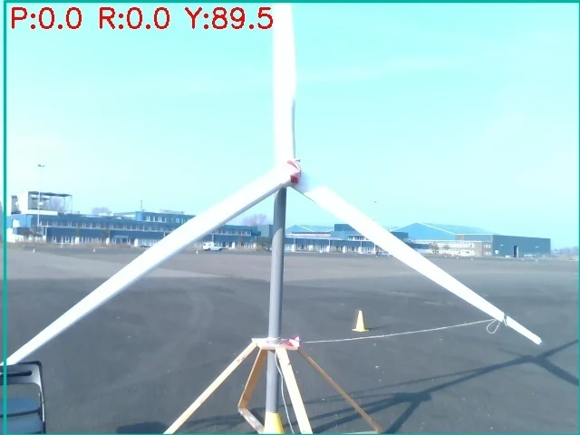
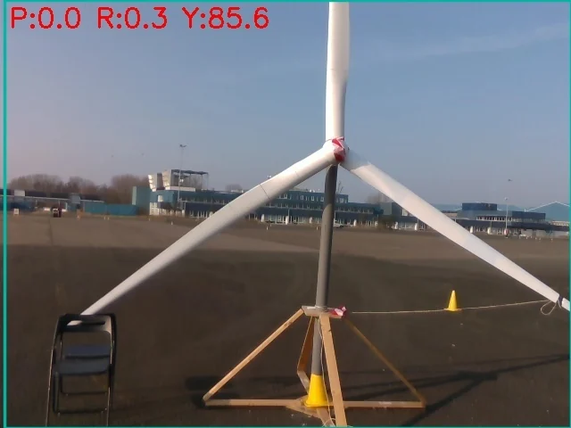
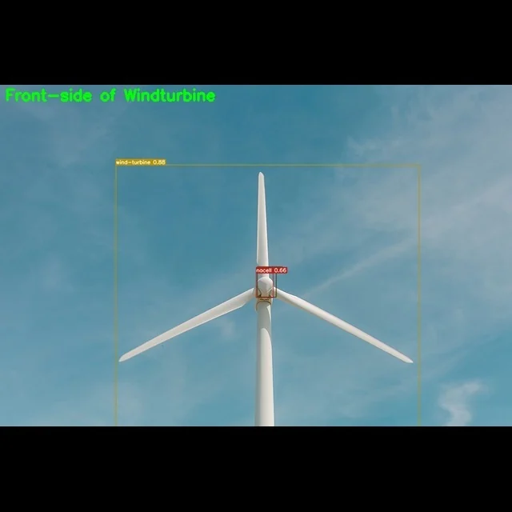
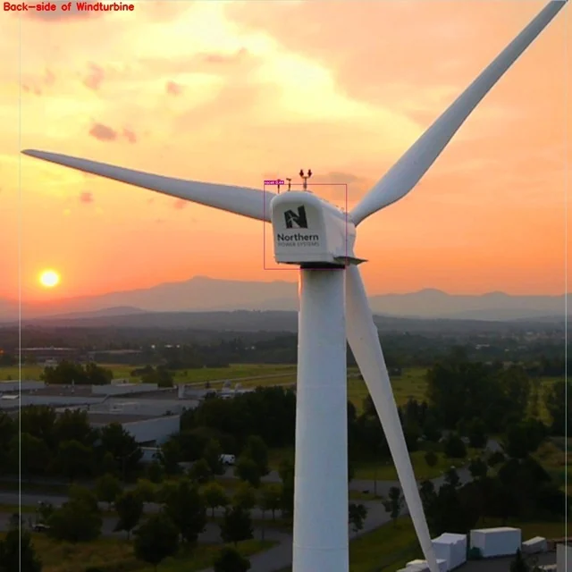
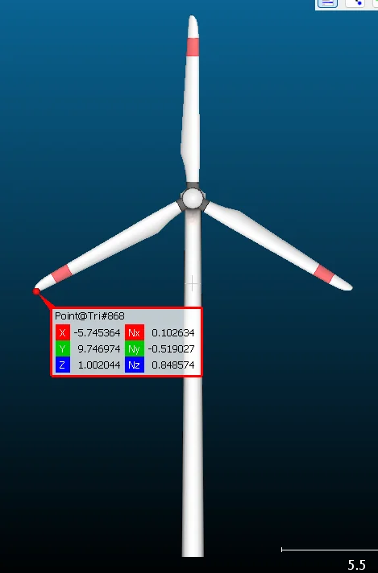
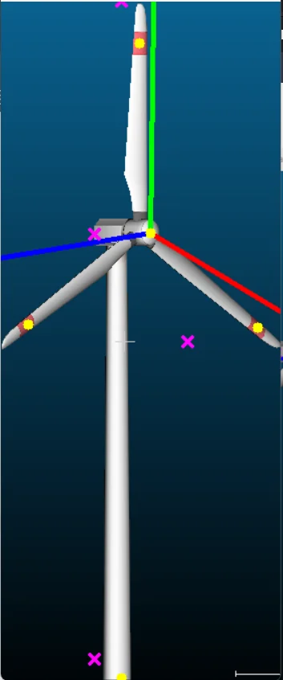
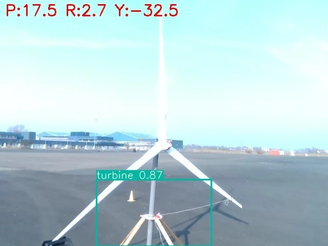

Teaching an autonomous drone where it is relative to a wind turbine, so it can plan its inspection path without a pilot. In real time, from a single camera.
Offshore turbines are huge, remote and dangerous to inspect by hand, so drones do it.
But a drone can only fly an inspection on its own if it knows its angle to the turbine. SpectX's existing pipeline often got that badly wrong, so we built a better one.
Tested on a scale turbine with known ground truth. The estimated yaw is printed in the corner of each frame.


Angle alone can't tell front from back. A multi-class YOLOv7 detector spots the hub (front) or the nacelle (back), which is key for locating damage and planning waypoints.


YOLOv7 finds the turbine, hub and nacelle in each frame, in half precision for speed.
The camera-angle-aware tracker turns the box geometry and focal length into pitch and yaw.
Hub or nacelle? A simple rule labels the front or back side.
A moving average over frames removes jitter from noisy detections.
The EPnP route matches known 3D points on the turbine to their 2D positions to recover the full 6-DoF pose. It works in principle, but it needs depth and well-spread points. On flat simulated renders, yaw errors ranged from 20% to 97%, so the lighter tracking pipeline became the recommendation.


